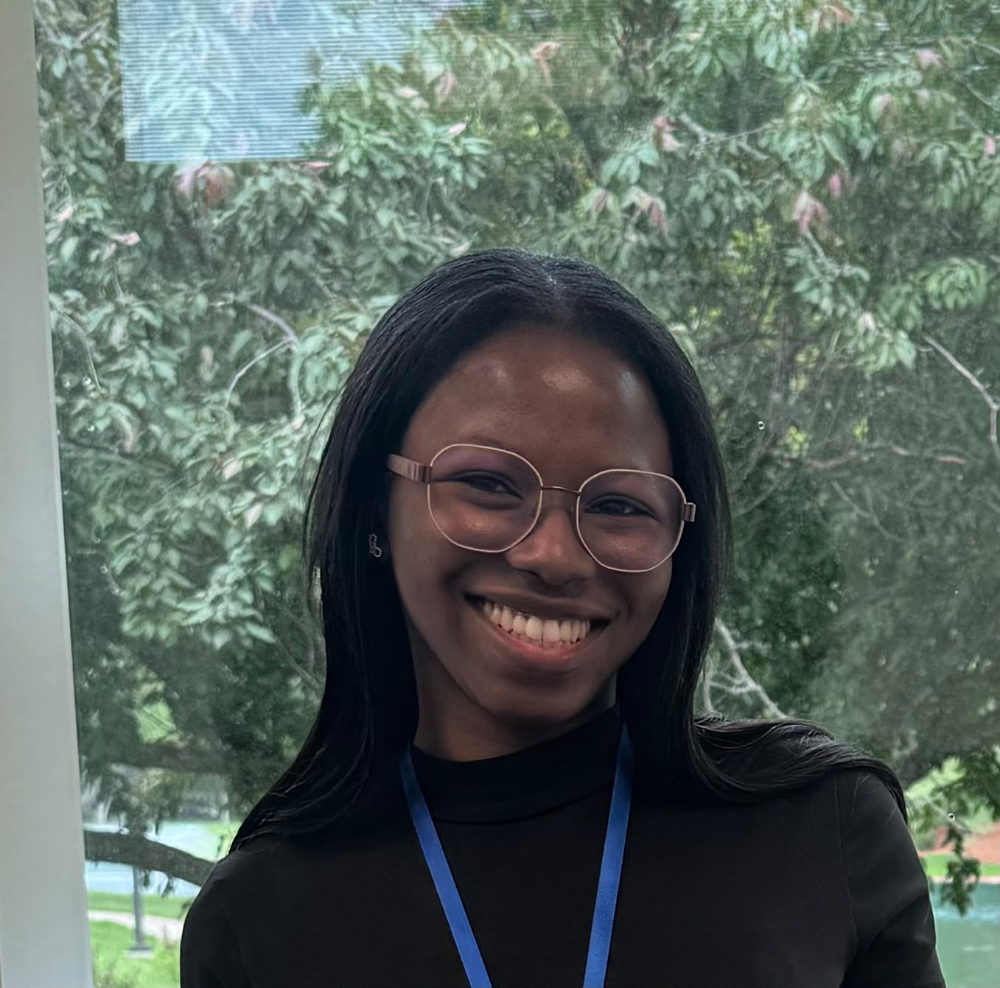

I'm passionate about building the connective tissue between biology, computing, and the people they serve.
Currently a senior at Dakota State University. Right now I'm doing research at Yale School of Medicine, Madison Cyber Labs, and Corteva Agriscience. My free time (when I get some) goes to binge-watching The Big Bang Theory, learning how to swim, and playing tennis — enthusiastically, if not always well.
I'm currently seeking PhD positions in computational design, accessibility, and computational biology.

My work sits at the intersection of three fields that don't often share a room: computer science, biology, and human-centered design. I've spent the last several years moving between them on purpose — studying gene expression in lung tissue models, prototyping assistive hardware for people with sensory disabilities, and building the software that research teams actually use day to day.
The hardest problems in health and accessibility tend to need people who can read a differential expression plot, write production Python, and sit with a user long enough to understand what they actually need. I try to be that kind of researcher. I'm currently a rising senior at Dakota State University, majoring in Computer Science with minors in Bioinformatics and Integrated Biology, and actively applying to PhD programs in HCI/assistive technology and computational biology for Fall 2027.
Each stage of my research has fed the next. Ecology taught me to work with messy, real-world data. Biomedical research taught me rigor at the bench. Accessibility work taught me to design with, not just for, the people affected. Software engineering is how I make all of it usable at scale.
Choose a field to follow the thread.
It started with muddy boots, bird rookeries, and learning how to find a pattern in data that refuses to sit still.
A Python and Streamlit application that replaces manual genomic probe panel tracking with an internal workflow tool, integrating with genomic databases to streamline coordination between R&D and bioinformatics teams.
An internal tool automating shipping and logistics operations for the Genome Center of Excellence, replacing manual tracking with real-time status monitoring.
End-to-end single-cell RNA sequencing pipeline — quality control, normalization, dimensionality reduction, clustering, and differential expression — characterizing transcriptional differences across lung bioreactor conditions.
An NFC-based application improving communication between caregivers and patients at an elderly care facility, deployed on a Firebase Firestore backend and designed to reduce documentation burden.
A designed multisensory space for users with cognitive and sensory disabilities, integrating programmable lighting, audio, and tactile stimuli with embedded hardware, using accessibility standards and human-centered design frameworks.
Quantitative audio signal analysis evaluating amplification, latency, and noise reduction across consumer earbud and hearing aid platforms, with comparative benchmarking of accessibility features to inform assistive audio device design.
Wearable assistive device prototypes developed through iterative fabrication cycles on Prusa and LulzBot TAZ 3D printers, evaluating form, fit, and usability directly with target user populations using low-cost, accessible makerspace workflows.
Systematic evaluation of AI voice recording tools using speech enhancement and noise suppression algorithms, benchmarking transcription accuracy and usability through Python-based analysis workflows.
A high-throughput experimental workflow and automated image analysis pipeline quantifying particle-surface interactions between microplastics and oils, as one of 25 scholars selected nationally for the NIH-funded SURF program.
DSU student studied microplastics in Utah over summer — 2:35
In my free time, you'd find me binge-watching The Big Bang Theory, learning how to swim, playing tennis, or reading African literature and Greek mythology retellings.
The idea took shape while I was working on the Snoezelen environment at Madison Cyber Labs — sitting with users who have cognitive and sensory disabilities, watching which lighting or textures actually helped and which ones I'd only assumed would. The same thing happened during hearing aid benchmarking, when the features that mattered most to users weren't the ones the spec sheets emphasized. I kept noticing the gap between how assistive devices get designed and how they're actually used.
We Make You is my answer to that gap: a future venture built around co-designing devices with the people who'll use them, from the first sketch, not the final usability test. Pursuing a PhD in HCI and assistive technology is the deliberate next step toward eventually making this a reality.